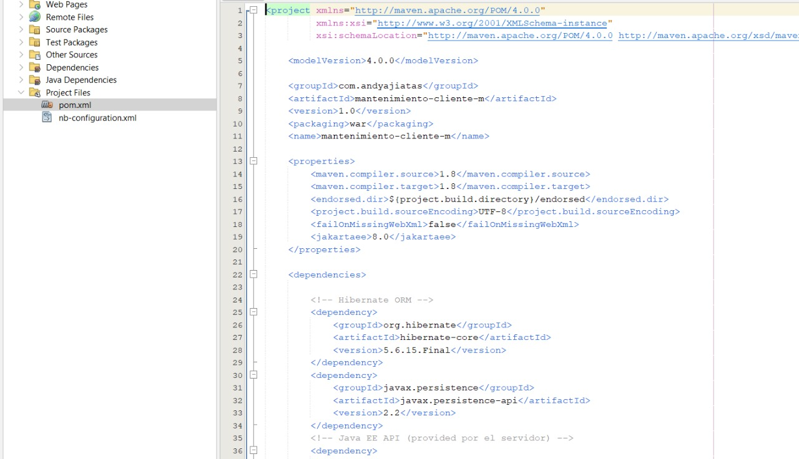

Introducción a Maven
Apache Maven es una herramienta de automatización de construcción de proyectos de software. Se utiliza principalmente para proyectos Java, pero también puede ser usado para construir proyectos en otros lenguajes. Su objetivo principal es simplificar el proceso de construcción en un proyecto, estandarizarlo y mejorar la gestión de dependencias.
Con Maven, puedes definir cómo se construye tu proyecto, qué dependencias necesita (librerías externas), cómo se empaqueta (JAR, WAR, EAR) y cómo se despliega. Todo esto se configura en un archivo XML llamado pom.xml.
Ventajas clave de Maven:
- Gestión de Dependencias: Descarga automáticamente las librerías necesarias.
- Construcción Estandarizada: Define un ciclo de vida de construcción claro y predecible.
- Informes de Proyecto: Genera documentación y métricas del proyecto.
- Reutilización: Fomenta la reutilización de código y configuraciones.
El Archivo pom.xml
El Project Object Model (POM) es el archivo fundamental de Maven. Es un archivo XML que contiene toda la información sobre el proyecto y los detalles de configuración utilizados por Maven para construir el proyecto.
Cada proyecto Maven tiene un pom.xml. Cuando ejecutas un comando Maven, este busca el pom.xml en el directorio actual para obtener la información necesaria para ejecutar la tarea.

Ejemplo de la estructura y contenido de un archivo pom.xml en un proyecto Maven.Estructura básica de un pom.xml:
<project xmlns="http://maven.apache.org/POM/4.0.0"
xmlns:xsi="http://www.w3.org/2001/XMLSchema-instance"
xsi:schemaLocation="http://maven.apache.org/POM/4.0.0 http://maven.apache.org/xsd/maven-4.0.0.xsd">
<modelVersion>4.0.0</modelVersion>
<groupId>com.tuempresa</groupId>
<artifactId>mi-manual-maven</artifactId>
<version>1.0-SNAPSHOT</version>
<packaging>war</packaging>
<name>Manual de Usuario de Maven</name>
<properties>
<maven.compiler.source>1.8</maven.compiler.source>
<maven.compiler.target>1.8</maven.compiler.target>
<failOnMissingWebXml>false</failOnMissingWebXml>
</properties>
<dependencies>
<dependency>
<groupId>javax.servlet</groupId>
<artifactId>javax.servlet-api</artifactId>
<version>4.0.1</version>
<scope>provided</scope>
</dependency>
<dependency>
<groupId>javax.servlet.jsp</groupId>
<artifactId>javax.servlet.jsp-api</artifactId>
<version>2.3.3</version>
<scope>provided</scope>
</dependency>
</dependencies>
<build>
<finalName>manual-maven</finalName>
<plugins>
<plugin>
<groupId>org.apache.maven.plugins</groupId>
<artifactId>maven-compiler-plugin</artifactId>
<version>3.8.1</version>
<configuration>
<source>1.8</source>
<target>1.8</target>
</configuration>
</plugin>
<plugin>
<groupId>org.apache.maven.plugins</groupId>
<artifactId>maven-war-plugin</artifactId>
<version>3.3.2</version>
</plugin>
</plugins>
</build>
</project>
Comandos Principales de Maven
Maven ofrece una serie de comandos que te permiten realizar diversas tareas en tu proyecto. Aquí están algunos de los más utilizados:
mvn clean- Limpia el directorio de destino del proyecto, eliminando los artefactos generados por construcciones anteriores.
mvn compile- Compila el código fuente del proyecto.
mvn test- Ejecuta las pruebas unitarias del proyecto.
mvn package- Empaqueta el código compilado en un formato distribuible (por ejemplo, un archivo JAR, WAR o EAR).
mvn install- Instala el paquete del proyecto en el repositorio Maven local, haciéndolo disponible para otros proyectos en tu máquina.
mvn deploy- Copia el paquete final al repositorio remoto para compartirlo con otros desarrolladores.